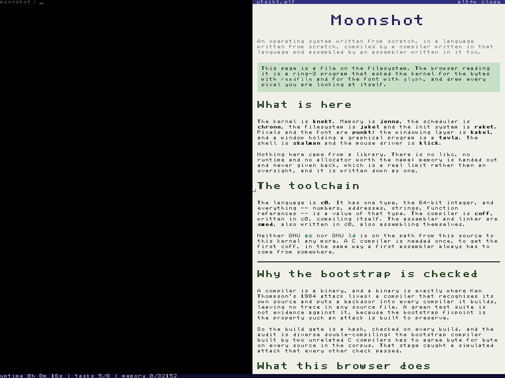

utsikt
utsikt reads an html file off
jakel, parses it into a
tree, applies a subset of css, lays the result out and paints it into a
window. it is an ordinary ring-3 program in a
kakel tavla, started with
start utsikt.elf, and it draws every pixel itself.
there is no networking, by decision. verk, the network stack, is the last subsystem moonshot will get. until then a page is a file.

/index.html in a tavla, beside a shell.html
the parser is forgiving. unclosed paragraphs, stray end tags and unknown elements
still give a page rather than nothing. headings, paragraphs, lists, tables,
pre, links, images and the common inline elements all have a default
style.
css
colours, backgrounds, text size and weight, alignment, block and inline, margins
and padding. selectors are a type (p), a class (.lead),
both (p.lead), comma-separated lists of those, and a descendant
selector of two (.note code). specificity counts the way css counts
it, and vertical margins collapse. a selector utsikt cannot represent is dropped
whole rather than applied in part.
layout
a line breaks only where a space was, so a word in bold followed by a full stop stays together. a table is a grid of equal-width columns. an image is a sprite in the format pensel saves, placed in the line like a word. text is set in the kernel's own font, so a page and the shell beside it look the same.
links
a click on a link loads the file it names, resolved from the root, and Backspace goes back. a link to another host is left alone. a strip along the bottom of the window says which file is open. a page's memory is given back to lager when the next one has loaded, so following links costs nothing that stays.
scripts
utsikt will not run javascript. it has an interface instead, where a scripting
engine registers the <script type> it runs and reaches the page
only through a small set of calls. the engine moonshot uses is
glimt.
its own repository
utsikt is developed in
github.com/cofflang/utsikt,
and moonshot carries a copy of it in programs/utsikt/.
contributions go to utsikt.